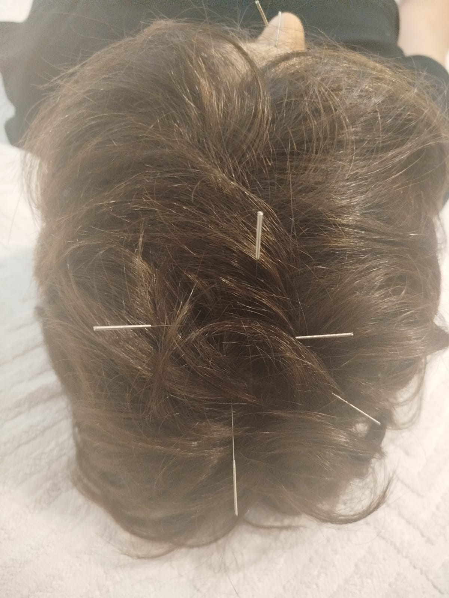
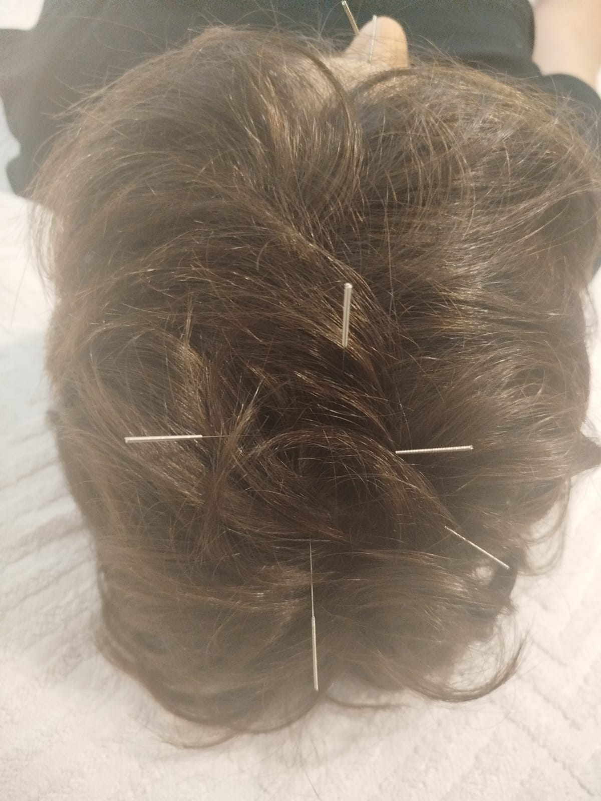
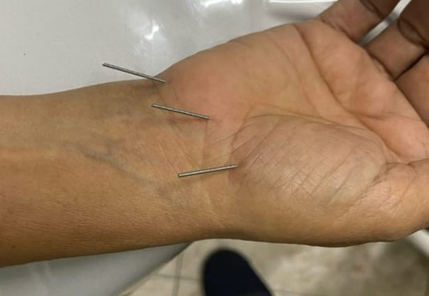
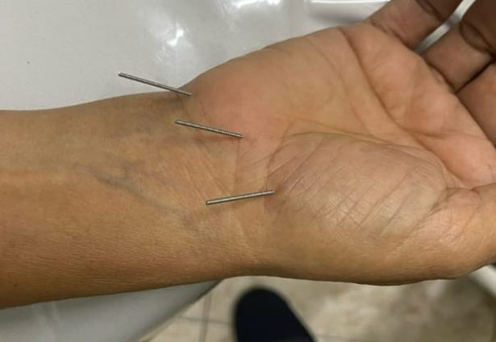

Acupuntura Sistêmica
A acupuntura é uma prática milenar originada na China, que busca equilibrar a energia vital do corpo. Ela utiliza agulhas finas aplicadas em pontos específicos para estimular o fluxo energético. O objetivo é restaurar o equilíbrio entre corpo e mente, promovendo saúde integral. Estudos modernos comprovam sua eficácia no tratamento de dores crônicas. Também é indicada para ansiedade, estresse e distúrbios do sono. A acupuntura fortalece o sistema imunológico e previne doenças. Melhora a circulação sanguínea e relaxa a musculatura. É uma técnica segura e natural, sem efeitos colaterais significativos. Pode ser usada como complemento a tratamentos convencionais. Favorece o bem-estar físico e emocional de forma duradoura. Estimula funções orgânicas como digestão e metabolismo. Ajuda na recuperação de lesões e processos inflamatórios. Promove serenidade e equilíbrio mental. É reconhecida pela Organização Mundial da Saúde. Adaptável a diferentes idades e condições clínicas. Proporciona qualidade de vida e disposição diária. É aplicada em clínicas e hospitais ao redor do mundo. Representa um elo entre tradição e ciência moderna. A acupuntura é uma ponte para o autocuidado consciente. Seu propósito é harmonizar o ser humano em sua totalidade.
 

 
